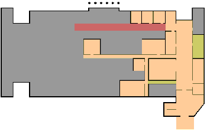
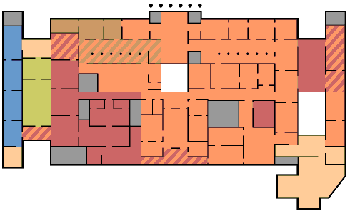

First Floor |
|
|  | 20th Century Europe and America |
| Special Exhibitions | |
| Public Areas | |
| Non-Public Areas | |
Second Floor |
|
| 20th Century Europe and America | |
| Africa | |
| Asia | |
| Classical Greece and Rome | |
| Pacific Islands | |
| Special Exhibitions | |
| Public Areas | |
| Non-Public Areas | |
| Stripes indicate and overlap in areas | |
Third Floor |
|
|  | 13th-16th Century Europe |
| 17th-19th Century Europe and America | |
| 20th Century Europe and America | |
| Photography | |
| The Americas | |
| Public Areas | |
| Non-Public Areas | |
| Stripes indicate and overlap in areas | |